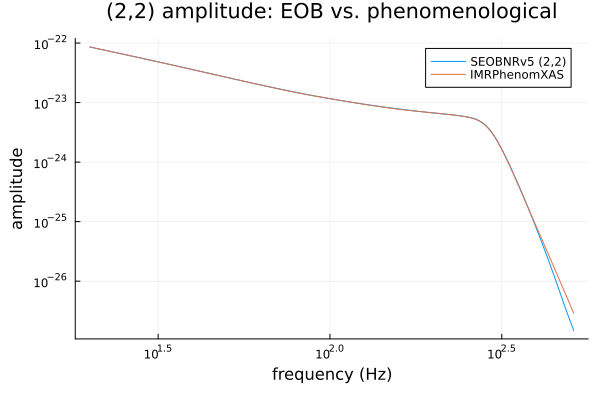
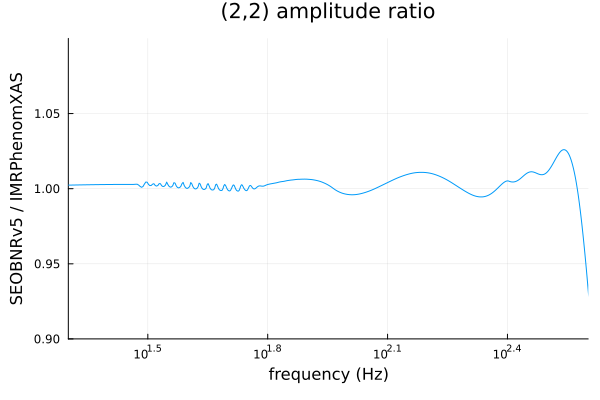
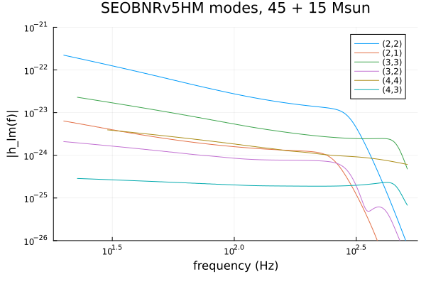
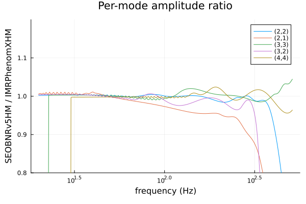
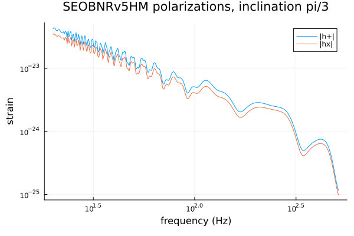
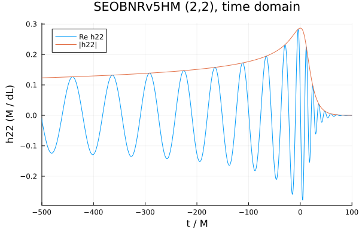
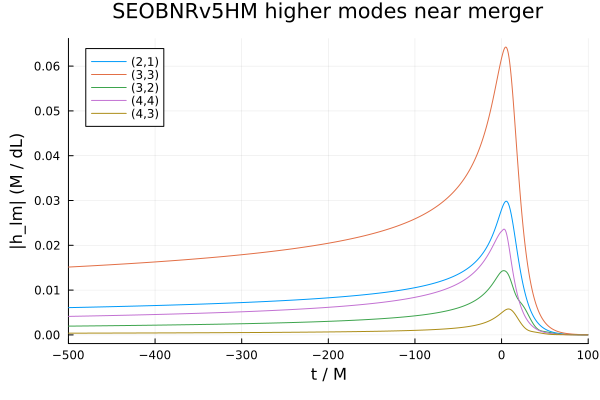
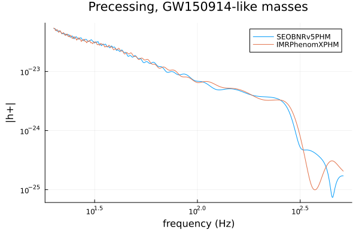

Effective-One-Body: the SEOBNRv5 Family
The previous tutorials covered the phenomenological (IMRPhenom*) models, which are closed-form fits evaluated directly at each frequency. The SEOBNRv5 models take the other route: they integrate the effective-one-body (EOB) equations of motion for the binary's orbit, build the inspiral modes from the factorized EOB waveform, and attach a merger-ringdown at the peak. The Hamiltonian, radiation-reaction flux, calibration fits and merger-ringdown are ports of pySEOBNR 0.3.7 and are validated against it.
| Model | Domain | Physics |
|---|---|---|
SEOBNRv5IMRAlignedSpinF2 | frequency | aligned spin, (2,2) inspiral-merger-ringdown |
SEOBNRv5HM | frequency (and time, via seobnrv5hm_td_modes) | aligned spin, modes (2,2),(2,1),(3,3),(3,2),(4,4),(4,3) |
SEOBNRv5PHM | frequency (and time, via seobnrv5phm_td) | precessing spins, the same six modes in the co-precessing frame |
SEOBNRv5AlignedSpinF2 | frequency | aligned spin, (2,2) inspiral only (post-adiabatic, ends before the plunge) |
The frequency-domain aligned-spin models build a table per binary (the EOB dynamics, then a stationary-phase approximation for the inspiral and a Fourier transform for merger-ringdown, blended between them), then evaluate it per frequency. That per-frequency evaluation is the part GravitationalWaveBayes.jl runs inside its GPU likelihood kernels. All of them use the conventions of the rest of the package: masses in solar masses, dL in Gpc.
using GravitationalWaveforms, Plots
gr()
m1, m2 = 36.0, 29.0
mc = (m1 * m2)^(3 / 5) / (m1 + m2)^(1 / 5)
eta = (m1 * m2) / (m1 + m2)^2
chi1, chi2 = 0.3, -0.1
dL = 0.41
f = collect(20.0:0.25:512.0)The (2,2) mode: SEOBNRv5IMRAlignedSpinF2
The same Phi/Ampl interface as IMRPhenomXAS (see Frequency-Domain Models). f_min is the starting (2,2) frequency of the EOB integration, so set it a little below the lowest frequency you need: the model is zero below it.
ampEOB = Ampl(SEOBNRv5IMRAlignedSpinF2(), f, mc, eta, chi1, chi2, dL; f_min=15.0)
ampXAS = Ampl(IMRPhenomXAS(), f, mc, eta, chi1, chi2, dL)
plot(f, [ampEOB ampXAS]; xscale=:log10, yscale=:log10, label=["SEOBNRv5 (2,2)" "IMRPhenomXAS"],
xlabel="frequency (Hz)", ylabel="amplitude", title="(2,2) amplitude: EOB vs. phenomenological")
The two are independent model families calibrated to numerical relativity, so they agree closely but not exactly: to a percent or two through merger, more loosely in the ringdown, where the amplitude falls steeply.
plot(f, ampEOB ./ ampXAS; xscale=:log10, legend=false, xlims=(20, 400), ylims=(0.9, 1.1),
xlabel="frequency (Hz)", ylabel="SEOBNRv5 / IMRPhenomXAS", title="(2,2) amplitude ratio")
Higher modes: SEOBNRv5HM
SEOBNRv5HM follows IMRPhenomXHM's interface: h_lm for one mode (LAL's h_{l,-m} convention, positive m) and hphc for the polarizations summed over all modes. It takes component masses. An unequal-mass system shows the higher modes more clearly:
q_m1, q_m2 = 45.0, 15.0
modes = ((2, 2), (2, 1), (3, 3), (3, 2), (4, 4), (4, 3))
amps = [abs.(h_lm(SEOBNRv5HM(), l, m, f, q_m1, q_m2, chi1, chi2, dL; f_min=15.0)) for (l, m) in modes]
plot(f, amps; xscale=:log10, yscale=:log10, ylims=(1e-26, 1e-21), label=permutedims(["($l,$m)" for (l, m) in modes]),
xlabel="frequency (Hz)", ylabel="|h_lm(f)|", title="SEOBNRv5HM modes, 45 + 15 Msun")
Each mode starts at m/2 times the (2,2) starting frequency, so the (4,4) mode here begins at 30 Hz. Compared mode by mode, SEOBNRv5HM and IMRPhenomXHM again agree to within a few percent (about 5% for the weak (2,1) mode here) until each mode's ringdown:
xhm_amps = [abs.(h_lm(IMRPhenomXHM(), l, m, f, q_m1, q_m2, chi1, chi2, dL; f_ref=20.0)) for (l, m) in modes[1:5]]
ratios = [a ./ b for (a, b) in zip(amps[1:5], xhm_amps)]
plot(f, ratios; xscale=:log10, ylims=(0.8, 1.2), label=permutedims(["($l,$m)" for (l, m) in modes[1:5]]),
xlabel="frequency (Hz)", ylabel="SEOBNRv5HM / IMRPhenomXHM", title="Per-mode amplitude ratio")
(IMRPhenomXHM has no (4,3) mode.) Compare models mode by mode, not through hphc: the polarizations depend on how each model defines the reference phase phiRef, which changes how the modes interfere.
hp, hc = hphc(SEOBNRv5HM(), f, q_m1, q_m2, chi1, chi2, dL, pi / 3, 0.0; f_min=15.0)
plot(f, [abs.(hp) abs.(hc)]; xscale=:log10, yscale=:log10, label=["|h+|" "|hx|"],
xlabel="frequency (Hz)", ylabel="strain", title="SEOBNRv5HM polarizations, inclination pi/3")
The time-domain modes
seobnrv5hm_td_modes returns the same model's modes in the time domain, in geometric units (t in units of the total mass M, t = 0 at the merger, strain in units of M/dL). It takes the chirp mass and symmetric mass ratio, and also returns the remnant mass and spin (in units of M). For the 45 + 15 system:
q_mc = (q_m1 * q_m2)^(3 / 5) / (q_m1 + q_m2)^(1 / 5)
q_eta = (q_m1 * q_m2) / (q_m1 + q_m2)^2
t, tdmodes, info = seobnrv5hm_td_modes(q_mc, q_eta, chi1, chi2; f_min=20.0, dt=0.5)
info.Mf, info.af(0.96599136255057, 0.6676785898923856)plot(t, [real.(tdmodes[1]) abs.(tdmodes[1])]; xlims=(-500, 100), label=["Re h22" "|h22|"],
xlabel="t / M", ylabel="h22 (M / dL)", title="SEOBNRv5HM (2,2), time domain")
plot(t, [abs.(tdmodes[k]) for k in 2:6]; xlims=(-500, 100), label=permutedims(["($l,$m)" for (l, m) in modes[2:6]]),
xlabel="t / M", ylabel="|h_lm| (M / dL)", title="SEOBNRv5HM higher modes near merger")
Precession: SEOBNRv5PHM
SEOBNRv5PHM takes the spins as 3-vectors (in the frame where the orbital angular momentum is along z at f_ref, which defaults to f_min). Its time-domain waveform is switched on smoothly over the first few cycles, so start f_min below the band you plot. It is the Fourier transform of the time-domain model, so it needs a uniform frequency grid f = k * df, like a data segment's. 1/df must be longer than the waveform.
df = 1 / 8
fu = collect(20.0:df:512.0)
chi1v = [0.4, 0.0, 0.2]
chi2v = [0.0, 0.3, -0.1]
hpP, hcP = hphc(SEOBNRv5PHM(), fu, m1, m2, chi1v, chi2v, dL, pi / 3, 0.0; f_min=15.0, f_ref=20.0)
hpX, hcX = hphc(IMRPhenomXPHM(), fu, m1, m2, chi1v..., chi2v..., 20.0, pi / 3, 0.0, dL)
plot(fu, [abs.(hpP) abs.(hpX)]; xscale=:log10, yscale=:log10, label=["SEOBNRv5PHM" "IMRPhenomXPHM"],
xlabel="frequency (Hz)", ylabel="|h+|", title="Precessing, GW150914-like masses")
The two curves need not match in detail at a fixed phiRef, for the reason given above, but the overall amplitude and the merger frequency agree. The time-domain model, seobnrv5phm_td, takes geometric units (m1 + m2 = 1, orbital frequencies in units of 1/M) and returns h+ - i hx together with the co-precessing modes.
Choosing between them
| Need | Model |
|---|---|
Aligned spin, (2,2) only, EOB | SEOBNRv5IMRAlignedSpinF2 |
| Aligned spin with higher modes | SEOBNRv5HM |
| Precessing spins with higher modes | SEOBNRv5PHM |
| Modes in the time domain | seobnrv5hm_td_modes (aligned), seobnrv5phm_td (precessing) |
The EOB models cost more per waveform than the phenomenological ones, since each binary needs an ODE integration before any frequency can be evaluated. In a likelihood that cost is paid once per parameter sample, not once per frequency bin. The ODEToy, AlignedSpinPNHam and SEOBNRv5AlignedSpin models (see the ODE tutorial) are the simpler steps the SEOBNRv5 models were built up from.
This page was generated using Literate.jl.